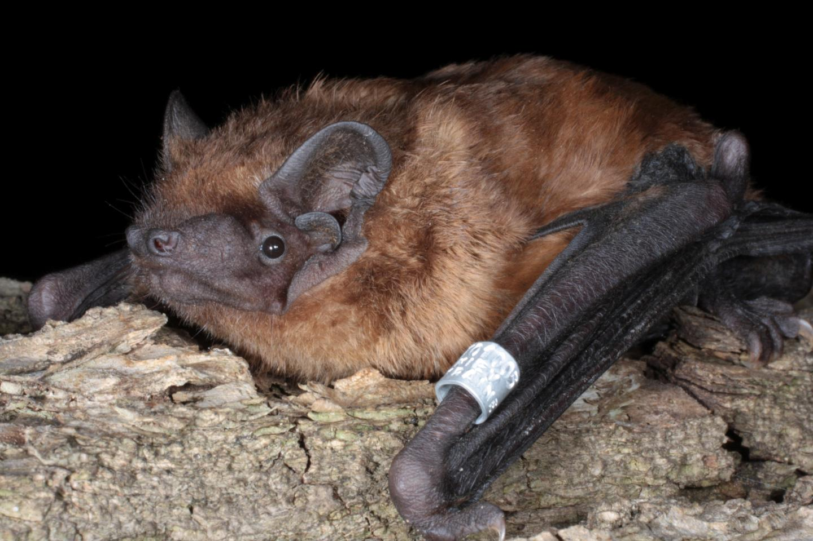
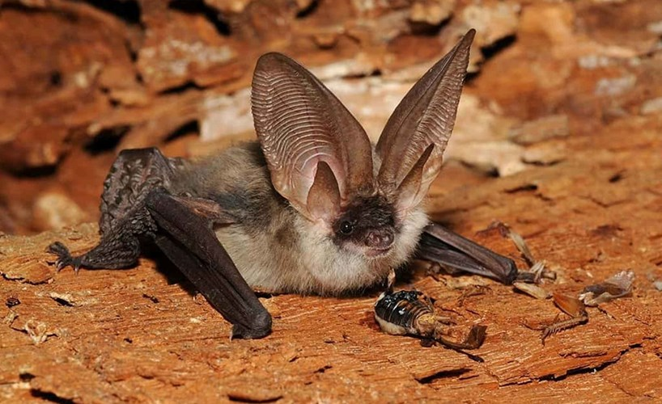
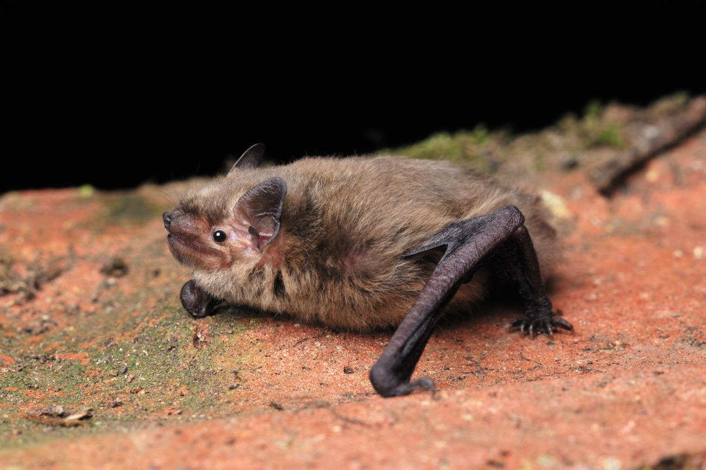
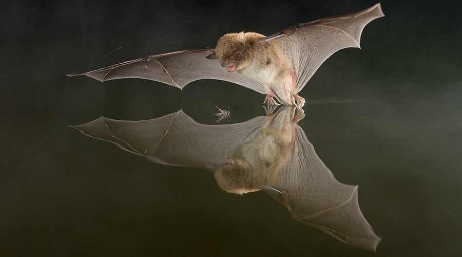

Use our flightpath guide below to identify common bat species.
1. Noctule Bat
 (Scanning tip: look up in the sky!)
Flies very high above tree tops, in straight lines and with steep dives.
2. Brown Long-Eared Bat
 (Scanning tip: prefers woodlands)
Medium-sized, usually flies close to trees. Flight is slow and hovering. Distinctive long ears and broad wings. Comes out well after dark so often difficult to see.
3. Pipistrelle Bat
 (Scanning tip: most bats are one of these!)
Small bats, fly from tree top height often down to just above our head height or lower. Lots of twists and turns.
4. Daubenton's Bat
 (Scanning tip: look at surface of water)
Medium-sized bat with white belly, flies very low over water, skimming the surface to catch insects with feet.